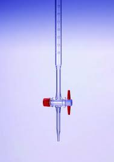
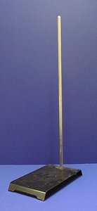

Table of Contents
Glassware used for measurement
Titration Equipments
Miscellaneous
- Cylindrical utensils made up of borosilicate glass, with a flat bottom and the upper opening having a rim around it along with a spout.
- The spout on their rim’s aids in the proper pouring of solutions and they do not have any covering on the top.
- Most of the time watch glasses are used to cover their solutions.
- They are of varying sizes and are used to hold, heat, or mix substances with a proper measure.
- They come with graduated calibrations, they are not meant for precise calculations of solutions, and as such other apparatus come handy in this.
BEAKER

- An Erlenmeyer flask is also known as a conical flask or a titration flask.
- Designed for easy stirring, can be swirled by hand without spilling
- Not used for measuring as they are only accurate to 5%
- Often used for titrations
- Slanted sides and narrow neck of this flask allow the contents of the flask to be mixed by swirling, without risk of spillage, making them suitable for titrations by placing it under the buret and adding solvent and the indicator in the Erlenmeyer flask.
- Flat bottom can be placed on a heating mechanism or apparatus.
ERLENMEYER FLASK

- Used to hold and mix small samples
- Stirred by tapping the bottom with two fingers
- Fit into both a centrifuge and test tube rack
- Often used in qualitative analysis
- Usually made of glass, for its relative resistance to heat.
TEST TUBE

- Measures one specific volume, marked by the etched line on the neck
- Used for precise dilutions and preparation of standard solutions.
- Easy to mix solutions, as they have glass stoppers and are designed to be inverted multiple times to mix.
- Size of glass stopper needed is listed on the bottle. Be sure to hold glass stopper while inverting.
- Careful not to fill above the etched mark, see reading the meniscus
VOLUMETRIC FLASK

- Pipette involves drawing up a specific volume of liquid into the pipette and then transferring it to another container either by using the pipette’s release mechanism or by blowing it out.
- Used to measure and transfer small volumes of liquids accurately.
- A cylindrical glass or plastic tube that has a narrow end for transferring liquids, and a bulb or other mechanism for drawing up the liquid.
- In making serial dilutions, measuring / dispensing samples and diluted solutions.
PIPETTE

- Used for accurately titrations or dispensing very small quantities of liquids
- Contains a stopcock to control the releaseof the liquid
- White plastic stop cock is open when parallel with the instrument and closed when perpendicular
- When not in use should be stored upside down and open
BURET

